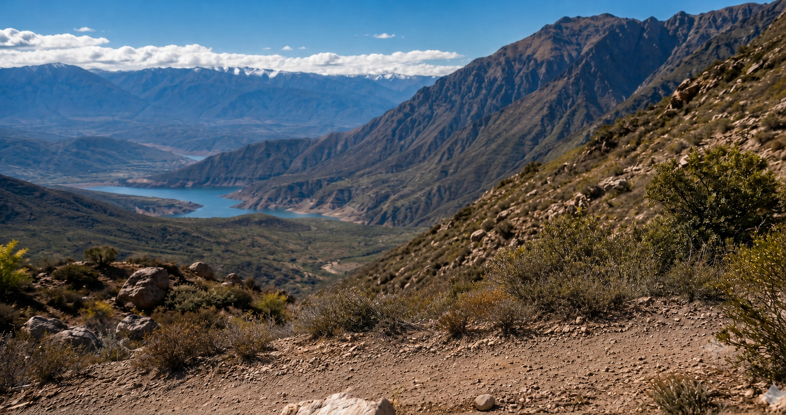
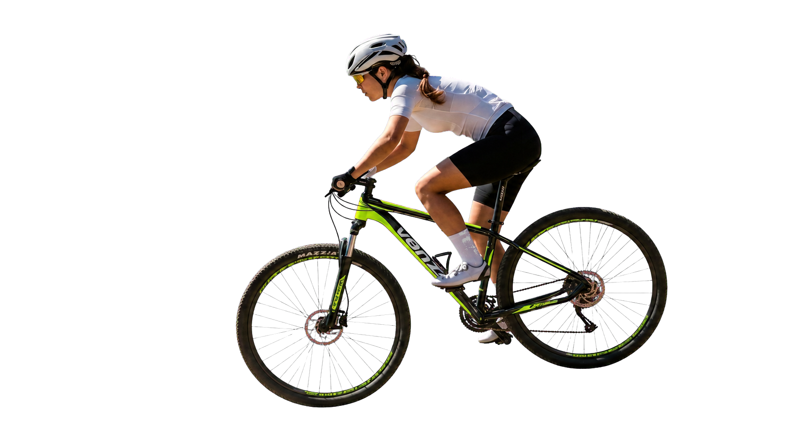
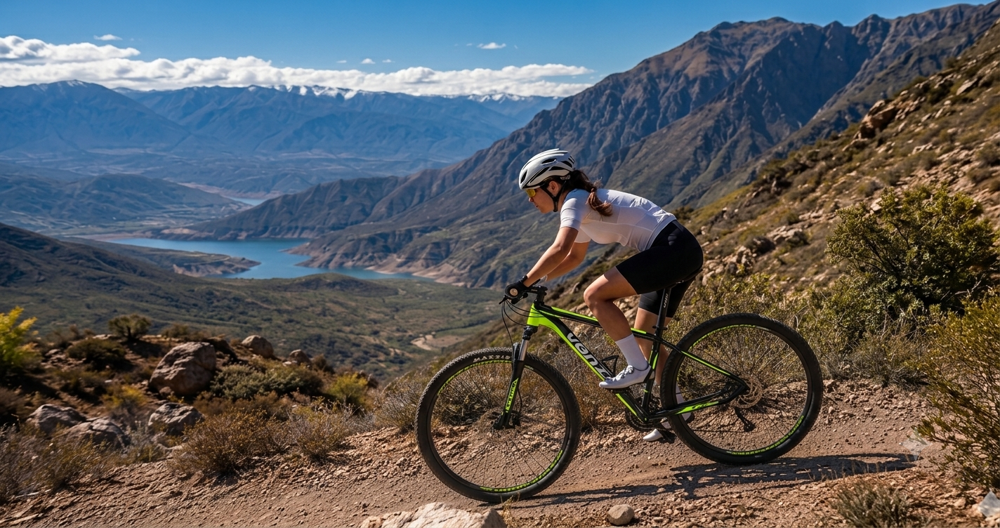
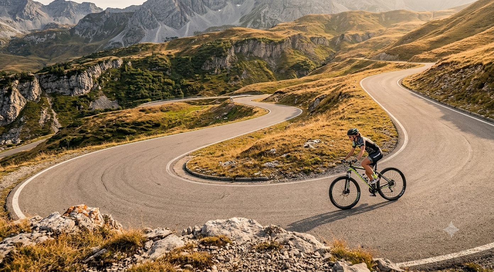
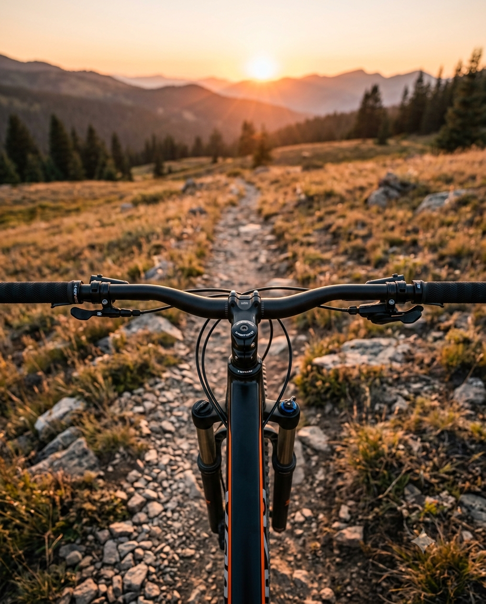
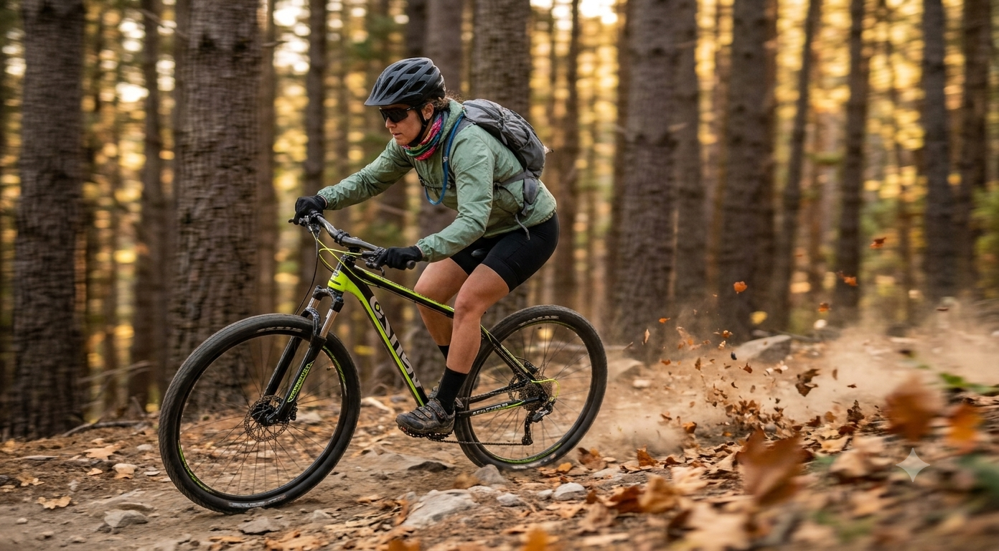
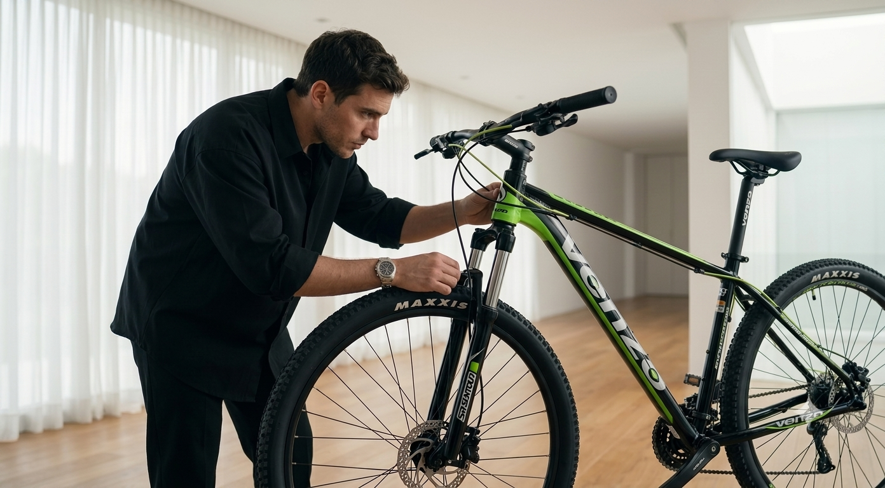

Control preciso
Respuesta en senderos



Respuesta en senderos
Eficiencia en montaña
Preparada para exigencias
Agilidad sin esfuerzo
Explorá
Venzo Amphion está pensada para quienes quieren dejar atrás los recorridos habituales y comenzar a vivir el ciclismo de montaña con mayor confianza.



Rendimiento
Cada detalle de la Amphion fue pensado para brindar comodidad, eficiencia y durabilidad. Desde sus componentes hasta su geometría.

Carlos Karabitian

Diseño
Porque cada ciclista es diferente, la Amphion ofrece distintas variantes pensadas para reflejar tu estilo. Elegí la tuya.
Verde Eléctrico
La Amphion se siente muy estable en senderos y responde excelente en las subidas. Fue una gran elección para empezar a salir a la montaña.
Me sorprendieron la comodidad y el control. La uso todas las semanas y se comporta muy bien tanto en tierra como en caminos irregulares.
Buscaba una bicicleta confiable para recorrer nuevos senderos. La Amphion tiene buen agarre, es liviana y transmite mucha seguridad.
Después de varios meses de uso, sigue funcionando impecable. Es cómoda, resistente y muy divertida para las salidas de fin de semana.
La elegí para volver a pedalear y superó mis expectativas. Se siente ágil, segura y muy cómoda incluso durante recorridos largos.
El cuadro responde muy bien y la transmisión es precisa. Me dio la confianza necesaria para animarme a caminos más exigentes.
Está pensada para salidas recreativas, entrenamiento y recorridos de montaña.
Puede recorrer caminos de tierra, senderos y superficies irregulares.
El tamaño adecuado depende principalmente de tu altura y posición de manejo.
Consultá el estado de entrega y armado con el distribuidor seleccionado.
La cobertura y sus condiciones dependen del distribuidor y del lugar de compra.